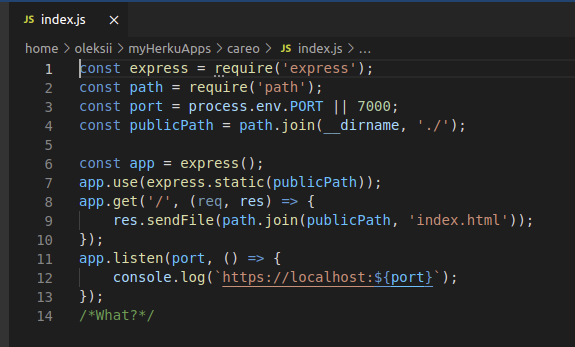

! Do everything like on image below:
The most important part is publicPath variable
and express.static method call
Into publicPath variable we say browser where all files located.
And express.static method helps browser use all files in current (project) folder